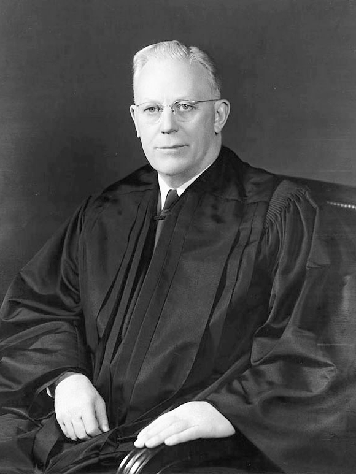
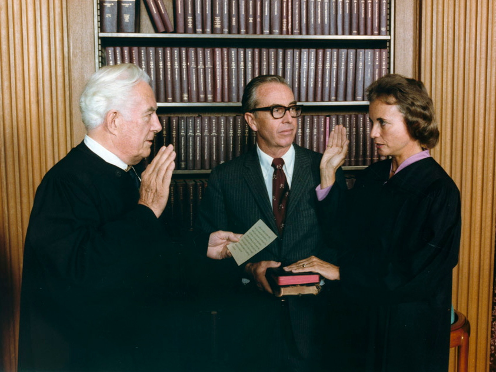

The Supreme Court
Today’s Supreme Court is made up of nine justices under Chief Justice John Roberts. As of the writing of this lecture, the court holds five Republican appointments and four Democratic appointments. Since Supreme Court justices serve lifetime terms, the appointment of justices has become a bitter political issue.
In theory, the Court is apolitical, but being completely unbiased is nearly impossible. Supreme Court decisions have changed American life in very real ways, and historically, political parties in power have selected justices they know will support the parties’ beliefs. A recent example of a partisan battle over the Supreme Court occurred when the Republican Senate refused to seat a Supreme Court justice nominated by President Barack Obama, a Democrat.
The Supreme Court has trended toward both sides of the political aisle over time.
| Democratic Era: The Warren Court | |
|---|---|
| From the 1940s through the 1980s, the Supreme Court took a turn toward the Democratic side. The era of 1953–1969 was the era of the Warren Court, under Chief Justice Earl Warren. This period was marked by the judicial branch using judicial review to end segregation and expand individual rights rather than support the power of government, at least in terms of individuals. |
 |
| Conservative Era | |
|---|---|
| Since the 1980s, beginning with the presidencies of Ronald Reagan and George Bush, Sr., the Court has reflected a more conservative bent. In the modern era, there have been more precedents overturned by a narrow margin (usually 5 to 4) than in previous courts. This is considered a sign of increased ideological differences among those sitting on the Court. |
 |
Remember that the Supreme Court is mostly an appellate court. This means that it hears cases appealed to it by lower courts. The Supreme Court usually has original jurisdiction (ability to hear the whole case) only in cases involving disputes between states.
There are checks on the power of the judicial branch.
The executive branch has power over the judicial branch, in that the President can appoint federal judges.
The legislative branch has power over the judicial branch, in that it can create new federal courts below the Supreme Court. Also, the Senate must approve presidential appointments to the Supreme Court.
This power of the Senate was on display in the last year of President Obama’s presidency, when the Senate slowed the rate of approving Obama’s appointments.
Congress may also impeach federal judges if behavior unbecoming of a judge becomes known. Federal judges have been impeached and removed from office for various reasons. The last check on judicial power is more of a tradition but certainly present. Judges may want to support the image of an independent, nonpolitical judiciary, and as such, may make decisions that would avoid overtly political outcomes.